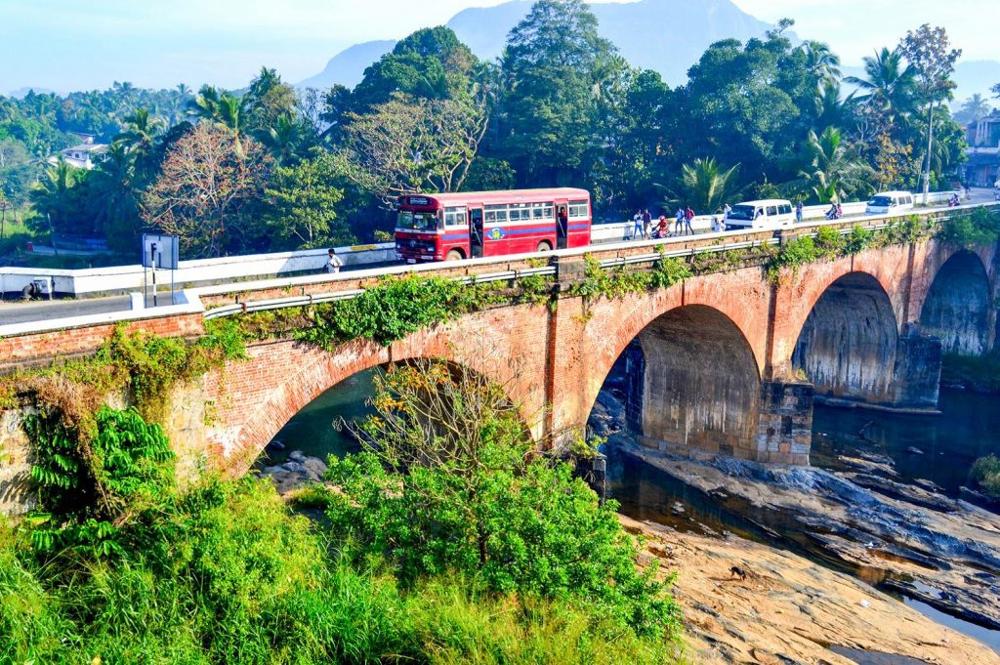

Mawanella Bridge |
|
|---|---|
|  | Mawanella boasts of the oldest operational Brick Bridge of Sri Lanka. Though examples of bridges built thousands of years ago still exists, recent history of building bridges in Sri Lanka started during the British Period. The British who developed tea and coffee as the primary plantation industries in the hill country in Sri Lanka (then Ceylon) the need for a road network to transport goods was arisen. As a result the British commissioned to build the Colombo – Kandy road in early 1800’s. |
Bathalegala or Bible rock |
|
 |
It is a rock shaped of a book. Situated in between Aranayakke and Mawanella. The best place to have a panaromic view of mawanella towan and many. This rock can be viewd from kadugannawa view point. Many consider this rock as best for the begginers of hiking. We are also arrange night camping and hiking to this place. In the top of the rock, There is a budhist temple. |
Bo Ella Waterfall |
|
 |
This is an small waterfall situated neear by mawanella in maha oya. This place is very easy to access. And photogenic area. In aha oya it is not dangerous to swim there. Best place have some loacal river bathing experience. But the fall area is danherous to swim or dive. |
Asupini Ella Waterfall |
|
 |
Asupini Ella (waterfall) also called `Asupini Falls` is a beautiful waterfall that can be seen from the historic town of Aranayake. According to ancient tales, it was named after the story about a King who had many queens. On his return from war, he assured them that he would give them a sign from the hills about the fate of the war. He said, “If his soldiers waved a white flag over the hills, it would mean he was defeated and killed in action. But, if he waved his own flag bearing his crest, that he was victorious! |
Saradiel Village |
|
 |
Whenever you travel along the Colombo-Kandy road, you’d catch a glimpse of the chimney-like rock known as Uthuwankanda that stands 1,410 feet above sea level. This rock served as Saradiel’s hideout two centuries ago. Uthuwana is a rural hamlet situated in Mawanella in Kegalle District. It’s the hood of Ceylonese Robin Hood where the Saradiel Village was built. Visiting the village gives you an understanding of Saradiel’s authentic story and the life of 18th century Ceylon. |